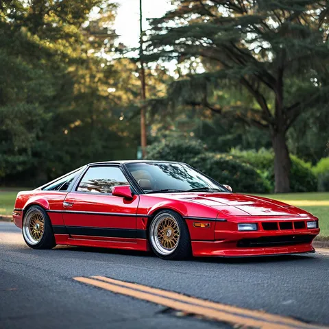

я тоже весьма консервативен.
Как я выше упоминал, я лютый фанат автомобилей. Я люблю ездить на них, покупать, продавать, тюнинговать, чинить (чуть-чуть сам, но в основном в сервисе, конечно). Я с детства потребляю много автомобильного контента - лет в 10 начал читать журналы Автомир, Авторевю, Клаксон, по праздникам - Топ Гир, тратя ни них почти все карманные деньги, сейчас смотрю многих автоблогеров и читаю интернет-издания. Пару раз в год выезжаю на трек-дни. Смотрю дрифт. Своих машин к текущему моменту у меня было 23, за рулем поездил в 122 авто (да, я записываю).
Зачем так много? А я через автомобили познаю мир. Каждый автомобиль может немало рассказать о конъюнктуре своего момента. О культуре и истории своей страны. О привычках и традициях жителей этой страны. Об экономических предпосылках его создания и том, чем все закончилось. История меняет автомобили, а автомобили - меняют ход истории. У меня (почти) не было "нормальных" машин, в пользу которых свой выбор мог бы сделать рациональный психически здоровый человек. Сплошь какой-то лютый неликвид из крайности в крайность. Плюс детские гештальты. Таков мой путь.
Так вот из моих 23 машин старше 2006 года было ... 13. А все почему - правильно, потому что раньше было лучше. Я считаю, что период примерно с 1993 по примерно 2006 - золотая эра автомобилестроения. К 1993 технический прогресс достиг достаточного уровня, чтобы делать действительно интересные машины. А после ~2006 начался период программируемых поломок, плюс еще люди зачем-то начали слишком много думать об экологии, начали душить автоиндустрию и всячески мешать делать крутые тачки.
И уже скоро они просто исчезнут с лица земли. Останутся только скучные кредитопомойки, ломучие премиалочки и дорогущие суперкары. В те годы существовали веселые и недорогие машины. Celica GT-four, Supra, е36-46, список можно продолжать. Я уже молчу про sti/evo. Где это все сейчас? Нет больше таких. Была хорошая попытка brz/gt86, но почему-то провалилась. Что есть сейчас? Дикие седаны (c63, m3/m5, rs4/rs6) за дикие же дикие деньги, хот-хетчи с моторами квад-турбо 1.2, и те распухли до размеров прежнего д-класса. И все они внешне едва отличаются от гражданских версий. Сколько сейчас на рынке купе? Киа серато, да, круто. Скукота.
Современные машины слишком цифровые. "Где мой 2007" - это же не только про музыку, с тачками примерно та же история. Сплошной мамбл-рэп (кроссоверы). Много спецэффектов, мало драйва. Не чувствуешь работы железа и нет обратного сигнала - сплошая симуляция. Про китайский автопром и электрички я вообще молчу (а если хотите, чтобы не молчал - дайте знать в комментах).
Я - сторонник старой школы. Это когда во главе угла - ездовые характеристики, а не количество экранов. Поэтому даже когда я недавно захотел свежую машину, я выбрал ту, которая построена по канонам, берущим корни в британской школе спорткаров 70-80-х. Низкий вес, короткая база, жесткий кузов, отточенное шасси, немного мощности, механика. Да, это mazda mx-5 (miata). Но подробней я о ней расскажу позже, когда съезжу на ней на трек-день. А если хотите, чтобы я рассказал о предыдущих 22 машинах - пишите в комменты.
Выбирайте себе тачки по душе, почаще меняйте масло, увидимся!
